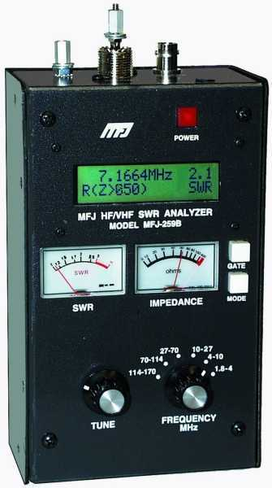
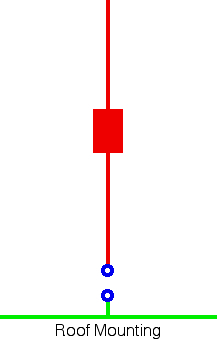
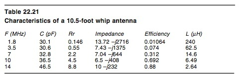
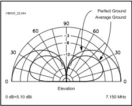

Recovered article. HTML body is from Common Crawl (text only); images came from the Sep 2022 iOS PDF:
Antenna Efficiency.pdf ·
7 extracted images & links ·
5 of 7 images merged inline (aspect-ratio matched). Original src preserved on each
<img> as
data-original-src.
Antenna Efficiency
Last Modified:
August 31, 2010
Contents: Caveats; Basics; The Three R Equation; Radiation Resistance; Coil Losses; Ground Losses; Other Losses; Calculating Efficiency; Bandwidth Notes; Odds & ends;
Caveats
 There is one issue which needs to be kept in mind when reading the following material, and one which will become glaringly evident as we move along. And that is, the importance of minimizing ground losses in an effort to achieve a decent level of efficiency from any HF mobile antenna. Please read the following paragraph carefully.
There is one issue which needs to be kept in mind when reading the following material, and one which will become glaringly evident as we move along. And that is, the importance of minimizing ground losses in an effort to achieve a decent level of efficiency from any HF mobile antenna. Please read the following paragraph carefully.
Tech Talk: Ground losses are in series with the other antenna losses, including radiation resistance, and it is these combined losses which make up the input impedance. Therefore, any increase or decrease in one or more of the other losses, will also effect ground loss, and the current which flows through that ground loss. As a result, you cannot assume that some change in one (or more) of the other losses making up the input impedance is a positive (or negative) one, without considering all of the other losses as well. Each of these losses are discussed below in more detail.
With the possible exception of 10 meters, perhaps 12 meters, and sometimes 15 meters, all HF mobile antennas incorporate a loading coil. The inductive reactance of the loading coil, cancels out the capacitive reactance a shortened (less than 1/4 wave length) antenna has (see chart, courtesy of the ARRL). Although it adds physical length to the antenna, it does not increase the electrical length except in very special cases (long, skinny, linear loading is an example). The current flow within the coil is always uniform, except in the special case noted.
☜Return☜
Basics
Maximum antenna efficiency is the holy grail of mobile operation.
M. Walter Maxwell, W2DU, author of Another Look At Reflections, made the following observation. "With center-loaded mobile whips of equal size having no matching arrangement at the input terminals, best radiating efficiency is obtained on models having the lowest measured terminal resistance (highest resonant SWR, model for model). Models having lowest SWR are wasting power in the loading coil, because of either a low value of coil Q or excessive distributed coil capacitance, or both."
What's hidden in the above observation is the amount of inherent and/or induced ground losses every mobile installation has. Remember, the highest efficiency, best quality, HF antenna money can buy, is no better than the ground plane it is mounted over.
One very important point needs to be made; A vehicle is not a ground plane, but rather it acts like a capacitor between the antenna and the surface under the vehicle which acts as the ground plane. The term ground plane in the following text is therefore a bit of a misnomer, but is used to differentiate it from DC and RF grounds. If you're unsure what a ground plane really is, read the Ground Plane Notes article. Further, pay particular attention to the Ground Losses section below, and the references to bonding.
There is another item to be emphasized at this point; Ground straps are not a substitute for a ground plane! Nor, are they a workaround for an improperly mounted antenna. In fact, excessive and/or incorrect grounding can cause ground loops to occur. Quite often ground loops manifest themselves as RFI, making them difficult to detect, and correct.
☜Return☜
The Three R Equation

What follows are the three major factors (and one minor one) which comprise the efficiency equation. For sake of argument, call them the three Rs! None of the factors can be measured directly by means commonly available to the amateur community. Some of them can be calculated close enough for our uses, but for the most part our main means of measurement is the antenna analyzer. However, some caution needs to be exercised when using an antenna analyzer to measure the input impedance.
First, all four of the factors are combined into one reading, and not individually readable. For example, the input impedance of an average quality, HF mobile antenna will be about 25 ohms, at resonance. What part of the 25 ohms is radiation resistance, or coil losses, or ground losses cannot be read, or assumed. When we make a change in our antenna system, there are cases where one change will effect another. While the result might be noticed by a change in the input impedance, to assume that change is positive without knowing about the other parameters involved, will give one a false sense of improvement. Cap hats are a very good example of the phenomena.
Antenna analyzers are wonderful tools, which can tell us a lot about our antenna installations, as long as we contend with the aforementioned unknowns, and if we know how to use them properly. Without doubt, the single biggest mistake neophytes make when using antenna analyzers, is using the SWR readout as a means of determining the resonant point of their antennas. The only time SWR, and the true resonant point will coincide, is when the input impedance is 50 ohms resistive (R=50, X=+Øj).
Tech Talk: If the input impedance of an antenna is other than 50 ohms non reactive (50R +Øj), any length of coax inserted between the antenna, and the antenna analyzer (or SWR bridge), will skew the readout results. The amount of skew depends on the magnitude of the mismatch, and the length of the coax in question. For this reason, antenna analyzer measurements should be taken as close to the antenna as possible; inches, not feet!
☜Return☜
Radiation Resistance

As mentioned above, the input impedance of an HF mobile antenna is a complex mixture of resistive losses. The only good loss is imaginary, and that's Radiation Resistance, commonly written as Rr. It's imaginary in that it doesn't exist as a physical part of an antenna in the same sense as a loading coil, whip, or mast. It is, however, real with respect to mathematical calculations.
In simple terms, Rr is a function of the effective electrical length, not of physical length. Thus, the longer the antenna's electrical length, the higher the Rr will be. It should be noted that the rate of change is by the square of the increase in length. That is to say, a 9 foot antenna will have twice the Rr of a 6 foot antenna. A 12 foot one will have four times the Rr of a 6 foot one. Rr may be as low as .2 ohms (80 meters), to upwards of 30 ohms (10 meters).
Since it is a factor of the effective electrical length of the antenna, we must lengthen the antenna (electrically and/or physically) to increase it. Obviously there is a limit to how long physically it can be, with 11 to 14 feet about the maximum (suburban, versus rural). If you live east of the Appalachians, perhaps just 8 feet.
It should be noted that the increase in Rr is due to the current node (point of maximum antenna current) being modified. If you need more information on this, do a Google search for degree amperes. Or better yet, read this page.
We can use cap hats to increase the effective electrical length which raises Rr, but there is more to cap hats than meets the eye. Aside from adding complexity and wind loading, they have to be designed correctly, and not be in close proximity to the coil. Correctly implemented, it is possible to raise the radiation resistance by a factor of 4, on the lower bands. If they're incorrectly implemented, they will have the opposite effect.
☜Return☜
Coil Losses
Coil loss (Rc), comes next. The term Q stands for Quality. It is determined by dividing the inductive reactance in ohms, by the resistive losses in the coil in ohms, at the operating frequency. Under laboratory conditions, it is possible to obtain coil Qs in the 800 to 1,000 range. However, in the real world of mobile loading coils, it is difficult to obtain Qs over 250 when mounted as part of an antenna. Even this takes good construction practices.
Regardless of what hype you read or hear, most commercial antennas have Qs in the 100 to 200 range, and some antennas are as low as 20. Most spirally wound antennas fall into this latter category. Large (6 to 8 inches diameter) bug catcher coils are often advertised as having Qs in the 1,000 range. Fact is, they're closer to 300. These big coils also have low self-resonant points negating their use on the higher bands. While bigger is better in some cases, there is a diameter limit, and in mobile loading coils, that's about 3 to 5 inches depending on construction, band of operation, and the materials which make up the coil assembly, including end caps if any.
Tech Talk: It's easy to look at a loading coil of some design, and say to yourself; that would be easy to duplicate, and you'd be right, to a point. One often missed attribute (if you could call it that) of mobile loading coils is their distributed capacitance. When the distributed capacitance is increased, the self resonant point of the coil decreases. As your operating frequency gets nearer the self resonant point, losses increase rather dramatically. While there is more going on than meets the eye, the effect reduces efficiency to a point the resistive losses can actually destroy the coil. I mention this to drive home the point; there is more to a loading coil than a chunk of wire wrapped around a coil form.
Speaking of coil forms. Almost universally, the coil form of most screwdriver type antennas is some sort of phenolic, although some use PVC, Nylon®, polycarbonate (Lexan®), and even Delrin®. No matter the material, or the dielectric constant of the material used, it's still a long way from that of common air! In other words, anything you place within the field of the coil effects its Q. This is especially true when the material making up the coil assembly, particularly the end caps and/or shorting plunger, is a conductive metal such as aluminum or stainless steel.
Admittedly, some materials have more effect than others, but no material (even air actually) is RF transparent. If there is a constant, it is this; The more material within the field of the coil, the more the Q will be reduced. This not only includes the coil form, but any surrounding material, conductive or not. In case you missed the point, the mast, whip, end caps, guy wires, body of the vehicle, proximity of the surface under the vehicle, mount, and a few others, all effect Q!
It's difficult to measure coil Q without sophisticated lab equipment, but you can use a few thumb rules as a relative measure. For example, long skinny coils have low Qs. Short fat ones typically have high Qs. The best ratio is about 1:1. In other words, as long as they are in diameter. However, there are other deciding factors. Coils with a large amount of inductance, like those used for 160 and 80 meters, need to have a lower ratio. In this case, about 3:1 (3 times longer than the diameter) seems to be optimum. What's more, the size of the wire, the spacing of the individual turns, and the dielectric constant of the coil form all have major effects on Q, and the coil's optimum L/D ratio.
Tech Talk: It is not uncommon for antenna manufacturers to publish their static Q measurements, and apply them to the assembled antenna. The truth is, once the coil becomes part of the antenna's superstructure, the Q can drop by 60%, perhaps a little more. There is no practical methodology the average amateur can use to determine the dynamic coil Q. Bandwidth and SWR are meaningless in such determinations. From the second paragraph above; Regardless of what hype you read or hear, with few exceptions most commercial antennas have Qs in the 100 to 200 range. If a manufacturer claims otherwise, be very leery.
☜Return☜
Ground Losses

The biggest single factor (most of the time) is ground loss, written Rg, and is effectively in series with the input impedance. The average recognized figure for ground loss, varies from 10 to 2 ohms (80 through 10 meters), but may be considerably higher. Lack of proper bonding, incorrect or missing control line chokes, poor mounting techniques, poor mounting locations, and incorrectly terminated coax feeds, all play a part.
Of these, the major consideration is Antenna Mounting. Remember this important point; Whatever RF current flows in the antenna, must return to the source. When we mount an antenna low, more of the return current is forced to flow through the lossy surface under the vehicle, rather than the body of the vehicle. We also add ground losses when the antenna is mounted on long stalks. The right photo depicts the worst of cases; low mounting, and a long stalk.
Tech Talk: The coupling between the super structure of any vehicle, and the surface under it, is not consistent; there will always be standing waves between them. Just about every nuance you can think of can, and will effect these standing waves. These standing waves are, in essence, the main cause of the ground losses in the first place. Please note, we're not talking about the standing wave ratio (SWR) of the antenna! It should also be noted that you can't measure these standing waves directly. Therefore, although they are represented as part of the input impedance of the antenna in question, changes therein cannot be assumed to be a reduction, or increase, in either these standing waves and/or in ground losses, without a thorough understanding of the other parameters involved. Field strength measurements will give you a better comparison of the changes, but here too they have to be carried out in a scientific (all factors normalized) manner, or the results will be just as ambiguous as any input impedance measurement.

Ground losses also effect the radiation at low angles, as illustrated in the chart at left. As ground losses increase, the mean takeoff angle (the angle of maximum radiation, ≈27°) changes very little. However, the amount of power radiated at any given angle does change, especially at the lower angles (<15°). Thus, we have yet another reason to minimize ground losses, by placing as much metal mass under the antenna as possible.
Tech Talk: Here is an article written by Tom Rauch, W8JI. It explains, in depth, why gain and takeoff angle (TOA), are not as important as often assumed. Rather, it is the RF energy you emit at any given TOA, but there is more to it than this simple statement. As pointed out in the article, nulls at any given TOA are more important than the gain (or lack of it), exhibited by the antenna. In a mobile scenario, multiple nulls, and lobes don't occur at HF frequencies. However, it is still important to consider the lower angle radiation strength, and lowering ground losses are the key to this end.
There are two more, important items to mention here.
When ground losses increase, the likely hood of common mode currents flowing of the control wires (if any) and coax cable also increases. This is a critical point if you're using, or planning to use, a computerized Antenna Controller.
Lastly, there are cases where ground losses takes a back seat to coil losses. Low-band, short, stubby antennas are an example. It is not uncommon for the coil losses in these antennas, to be 2 or 3 times the ground loss. This magnitude of coil loss is also the reason short, stubby antennas don't need matching.
☜Return☜
Other Losses
Stray capacitive losses, while not exactly the same as the three Rs mentioned above, they are nonetheless important. That is to say, they're, in parallel (rather than in series) with the input impedance. They're typically small, less than ≈5 pF, but may be large in some cases; trailer hitch mounting behind a van is a good example.
Depending on the frequency in question, the overall length, and the effective diameter of the antenna, an unloaded (no coil) HF mobile, will exhibit a series capacitance of between ≈20 and ≈45 pF of capacitive reactance. The ratio between the parallel and series capacitances, will give you a prima facie reason for keeping the antenna (especially the coil) as far away from body work as possible. Once again, it is the mass under the antenna that counts, not what's along side!
There are also some conductor losses in the mast and whip, but for the most part these can be ignored. Just for the record; the differences between antennas made of aluminum and/or stainless steel, and ones made of silver-plated copper is all but moot. In any case, they're only a fraction of the three R losses listed above.
☜Return☜
There is no easy, cut and dried, measure of antenna efficiency. Bandwidth, number of DX contacts worked, coil type, antenna type, mounting type, antenna shootouts, make, brand, matching method, cap hat, nil, not, nix, nothing! Even modeling can give you a false impression. So, the question remains; how do you know if it is efficient?
Efficiency can be calculated (not exactly, but close enough) if all we know the three R (Rr, Rc, and Rg) values. All we have to do is add these factors together to get Rt (Rr+Rc+Rg=Rt), and divide Rr by Rt. For an average 8 foot antenna mounted on an average vehicle, and using an estimated ground plane loss, the efficiency ranges between .2% on 80 meters to maybe 80% on 10 meters. These figures are based on data taken from Chapter 16 of the ARRL Antenna handbook. By the way, if you want to know just how important coil Q is, calculate the efficiency differences between the figures for coil Qs of 50, and 300. If you prefer to use dB as a reference, the formulas is 10 log (Rr/Rt).
The aforementioned method assumes we know the radiation resistance. We don't, at least with certainty, even if we go through the necessary formula machinations listed in the ARRL Antenna Handbook. However, there is a way to get close, or at least as close as we need to be.
In the Technical Correspondence section of the September 2006 issue of QST (page 57), are a few paragraphs written by Dr. Jack Belrose, VE2CV. Jack explains how to use an antenna analyzer and EZNEC to calculate the efficiency of a mobile antenna. The basic premise is to compare the measured input impedance of your mobile antenna, compare it to the modeled impedance given by EZNEC, and then adjusting the coil Q (resistive loss) until the two impedances (measured and calculated) equal. Then reading the programs calculated radiation efficiency.
Tech Talk: EZNEC, and most of the other numeric electromagnetic coding engines, are marvelous programs. They allow expert, and neophyte alike, to model all-manner of antenna parameters. However, the results are dependent on the data provided! For example, leaving out the feed line when doing an analysis will skew the results. Another common error is miscalculating ground losses. Therefore, assuming and quoting the results verbatim, without a basic understanding of how antennas behave (especially mobile ones), often leads users astray. In other words, these applications are a tool, not a panacea!
There are a couple of things to remember when using this method. First, the analyzer's frequency must be adjusted until the reactive component is zero (X=Ø), and not for the lowest SWR! Then, and only then, will the resistive value be correct (within tolerances). The measurement needs to be made without any matching devices attached. In other words, we need to know the actual input impedance, not a transformed one. And as mentioned above, the measurement must be taken as close to the antenna as possible, and not at the transceiver end of the feed line!
Depending on the program used (Nec 2, Nec 4, EZNEC Pro, etc.) the spread of calculated efficiencies may be as much as 10%. If in doubt, always choose the worse case scenario, as the best case usually assumes facts not in evidence. Lastly, just because your efficiency is great on 20 meters, is no indication what it will be on some other band, higher or lower. In fact, the higher bands may have greater loss due to capacitive coupling.
Incidentally, Jack wrote a series of articles for QST, starting with this one: Short Antennas for Mobile Operation (September 1953, Page 30). My introduction was via the 1960 issue of the ARRL Mobile Manual which contains a reprint of the articles. I still use the manual for reference, as it is the basis for all later treatises on the subject. Updated versions appears in the ARRL Antenna Compendium #4, and in the 2010 issue of the Handbook.
☜Return☜
There is another Q factor we have to contend with, and that is the Q of the antenna as a system. The Q of a short HF mobile antenna is directly related to the coil's Q, the coil's distributed capacitance, the capacitance of that part of the antenna above the coil, any capacitance shunting the coil, where in the antenna the coil is located (base?, center?), shunt capacitive losses, the overall (effective) length of the antenna, the ground losses, and the other resistive losses including radiation resistance. You might notice these are the same losses we deal with in maximizing efficiency. In short, while we strive to increase efficiency, we also increase the antenna system's Q which tends to reduce the effective bandwidth of the antenna. In other words, to increase efficiency we have to lower the resistive losses, or increase radiation resistance, or both. You can do both to a point, but there are diminishing returns with respect to cost, complexity, and of course physical size.
While it's common to relate (usable) bandwidth to the points above and below resonance where the SWR reaches 2:1, it isn't definitive. The reason is, you can have a wide bandwidth antenna that is very efficient. You can also have a very narrow banded one that's inefficient. So, why is bandwidth important? It really isn't much of a concern on 20 meters or above, but below 20 meters it is. Put another way, the bandwidth of an 20 meter antenna of reasonable quality will be about 150 kHz. The bandwidth of a similar quality antenna on 80 meters may be just 10 to 15 kHz. Again, don't assume your antenna is efficient just because the bandwidth is narrow.
Bandwidth is also dependent on the amount of capacitance located above the loading coil. All else being equal, an antenna with a large (properly mounted) cap hat will have a wider bandwidth, and higher efficiency, than one without. This is opposed to the common view about bandwidth.
Some amateurs incorrectly assume that inexpensive, low Q antennas are superior to some higher priced ones. The false assumption is, they don't have to retune their antenna as often, so it's got to be better. Adding insult, a few misguided manufacturers (especially Hustler®) tout their products extended bandwidths as an advantage. Both of these premises are false.
Besides using a tuner, another way to extend the bandwidth is to use a shorted coax stub across the antenna terminals. Selecting the correct length will not only match the antenna's input impedance to the feed line, its reactance is exactly opposite the antenna's reactance with any given change in frequency. Thus the 2:1 bandwidth increases (typically 30% to 50%). While the trick works well for a single band antenna (a different stub is required for each band), it's not a good solution for a remotely tuned antenna.
By the way, there is a formula circulating the Internet which states that antenna Q is equal to 360 times the frequency in MHz, divided by the 2:1 VSWR bandwidth in kHz. One has to assume they mean antenna system Q, but that's not a given. While this formula might give you a comparison between antenna A and antenna B (all else being equal), the actual Q of the antenna (system or otherwise) requires a textbook-full of formulas, and a lot more information than just the 2:1 bandwidth! Fact is, this formula is no more specific than the number of DX contacts a specific antenna garnered.
☜Return☜
Odd & Ends
The RF imposed on the motor leads of a remotely-tuned antenna, must be adequately choked. As I point out in this article, Antenna Controllers, inadequate choking will effect the input impedance, and thus the antenna's efficiency. How much effect depends on several factors; As long as the choke's impedance is at least two magnitudes larger than the antenna's input impedance, (> 5 k ohms), the effect will be insignificant.
As stated above, ground losses dominate the efficiency formula. However, in some cases coil losses become dominate. A case in point are the various, short and stubby, HF mobile antennas which have become all the rage; their coils have rather low Q ratings.
If you design an HF mobile antenna carefully, you can achieve a coil Q averaging about 300 as mounted in (on) the antenna. On 80 meters, a well-designed, center-loaded coil with a Q of 300 will have a resistive loss of about ≈12 ohms. Combine this with an overall length of about 7 feet, and a ground loss of 12 ohms, and the radiation efficiency is about 3%. That's 100 watts in, just 3 watts out!
One with a coil Q of 50 will have a resistive loss of ≈72 ohms! Combine this with an overall length of about 7 feet, and a ground loss of 12 ohms, and the radiation efficiency is just .7 %. That's 100 watts in, just 7/10 of a watt out!
Incidentally, these figures are straight out of the ARRL Antenna Handbook.
☜Return☜
 There is one issue which needs to be kept in mind when reading the following material, and one which will become glaringly evident as we move along. And that is, the importance of minimizing ground losses in an effort to achieve a decent level of efficiency from any HF mobile antenna. Please read the following paragraph carefully.
There is one issue which needs to be kept in mind when reading the following material, and one which will become glaringly evident as we move along. And that is, the importance of minimizing ground losses in an effort to achieve a decent level of efficiency from any HF mobile antenna. Please read the following paragraph carefully.{kind=link}
{kind=link}
{kind=link}
{kind=link}